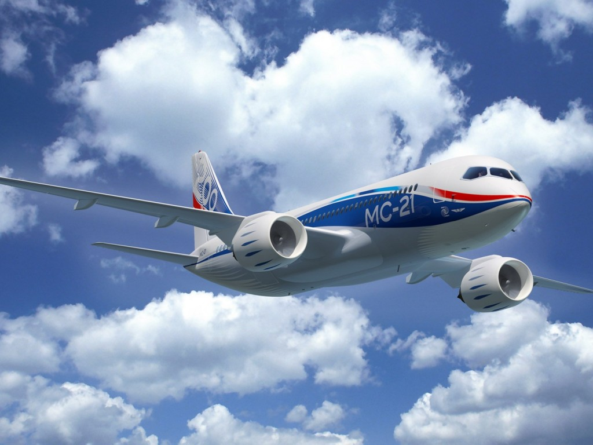
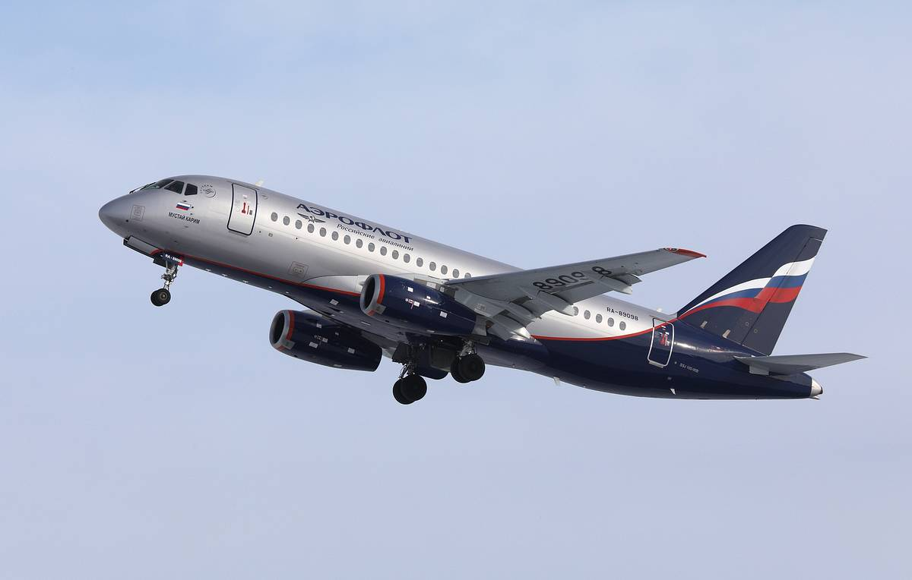
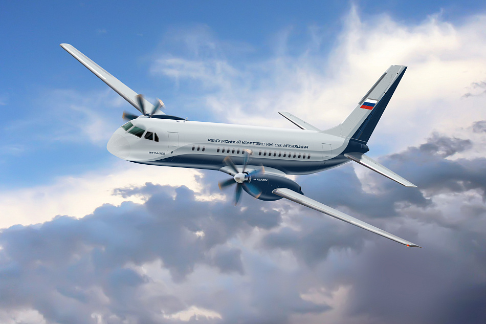

Гражданские самолеты нашего аэропорта
Авиалайнер МС-21
Впервые появившийся в небе в 2017 году самолёт МС-21 претерпел значимые изменения в оснащении: уже в конце 2020 года вылеты совершались с двигателем, заменённым на российский, была проведена серия испытаний и перелёт на гражданский аэродром в Иркутск. Лайнер прошёл все необходимые испытания, был одобрен к серийному производству. Многие транспортные компании уже заинтересовались этим новейшим среднемагистральным самолётом.
Преимущества модели МС-21
В связи со многими конструктивными изменениями машина получила следующие дополнительные возможности:
- высокую мощность;
- возможность кратковременной посадки пассажиров благодаря увеличенным габаритам фюзеляжа и улучшенной планировке салона;
- комфортную обстановку во всех отсеках лайнера.
Рассчитанный на 163 пассажира, в том числе имеющий 16 мест для обслуживания в бизнес-классе, самолёт имеет самый широкий салон, в классе однопроходных моделей лидирует по ширине. В целом будут улучшены условия для работы экипажа и пребывания пассажиров – это увеличение жизненного пространства, наличие ёмких багажных отсеков, широкий проход и комфортный шаг между рядами кресел.
Дальность полёта, для которой планируется эксплуатация этого транспортного средства, составляет 6000 км, возможно будет осуществлять рейсы, например, Москва – Иркутск.
Самолёт Sukhoi Superjet 100
Гражданские самолёты корпорации «Сухой» среднемагистрального типа были первыми пассажирскими самолётами в новейшей истории России. Сертификация была произведена в соответствии с европейскими нормами о безопасности в 2011 – 2012 годах. На мировой рынок были представлены модели компании «Гражданские самолёты Сухого» с отличительными особенностями
- для эксплуатации на узких взлётных полосах;
- с увеличенной дальностью полёта;
- с возможностью использования на укороченной полосой взлёта и посадки.
Позднее, в 2018 году компания-производитель представила модификацию SSJ-75, оснащённую отечественным двигателем серии ПД, модернизированную с помощью импортозамещающих технологий. Укороченный вариант модели имел многие преимущества, были решены многие проблемы по лётной годности лайнера, использовались детали из новейших композиционных материалов, производство было признано экономически выгодным.
Следующая модель SSJ-New в большой степени была ориентирована на российский рынок комплектующих, была спроектирована в 2019 году. Оснащение самолёта российским турбо-вентиляторным перспективным двигателем поколения 5 и 5+ даёт многие преимущества:
- низкий удельный расход топлива;
- значимое снижение уровня шума при работе двигателя;
- снижение расходов на обеспечение циклов полёта.
Конструктивные особенности новой модели позволяют добиться экономической эффективности от эксплуатации при минимальном использовании импортных материалов.
Ближнемагистральный самолет Ил-114
Пассажирский авиалайнер, разработанный в конце прошлого века, совершил свой первый полёт в 1990 году. Различные модификации самолёта различались установленным на лайнере оборудованием. Серийного выпуска лайнеров в их современной комплектации не производилось. Обновлением его инженернотехнической оснастки стали заниматься в 2019-2020 годах, была разработана модель Ил-114-300, в которой были заменены двигатели и, соответственно, улучшены лётные данные.
Модернизированный вариант этого ближнемагистрального самолёта создан на 100% из комплектующих российского производства. Первоначально предназначенный для взлёта с грунтовых или бетонных взлётно-посадочных полос, современный самолёт также оборудован системой шасси, позволяющей совершать взлёт и посадку в сложных метеоусловиях, при погодных условиях второй категории сложности.
В настоящее время пассажирский турбовинтовой узкофюзеляжный лайнер предназначен для перевозки 68 пассажиров, кресла в салоне расположены попарно. Просторный салон самолёта имеет широкий проход, кабина выполнена комфортно для пилотов, оборудована для полётов в любое время суток. Отличная крейсерская скорость самолёта в 500 км/ч позволяет осуществлять на нём все виды коммерческих перевозок.
Интересный факт: новейшая конструкция этого авиалайнера, как и её предшественницы, имеет низкий уровень шума, что создаёт дополнительный комфорт для пассажиров. Для производства новейшего лайнера была создана 3Dмодель.
Максимальный запас топлива машины, рассчитанный на максимальную загрузку, позволяет совершать перелёты дальностью до 1500 км.